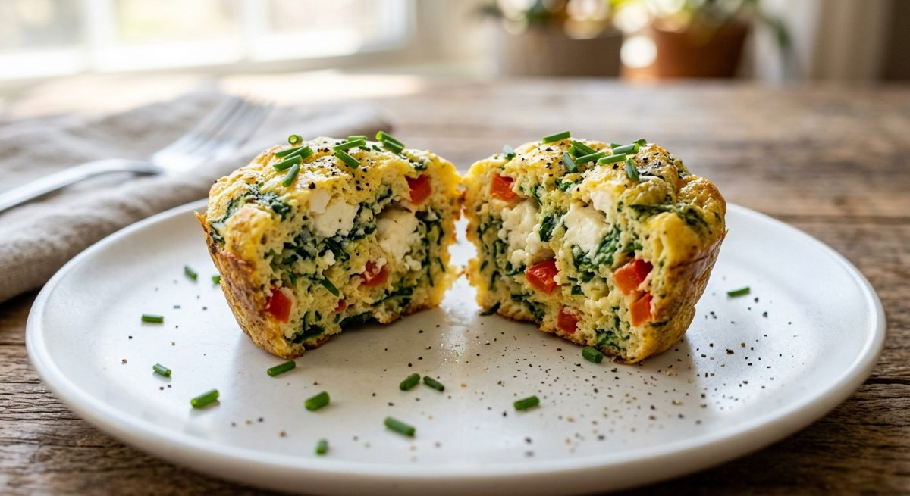
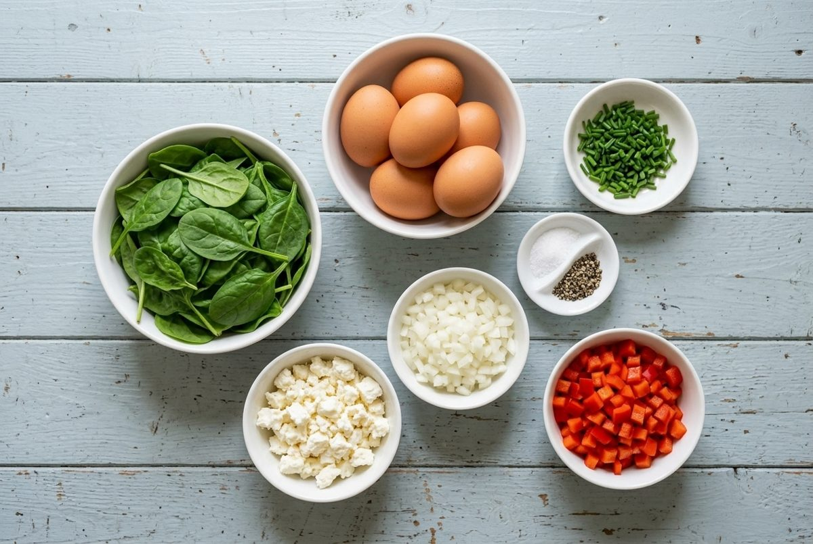
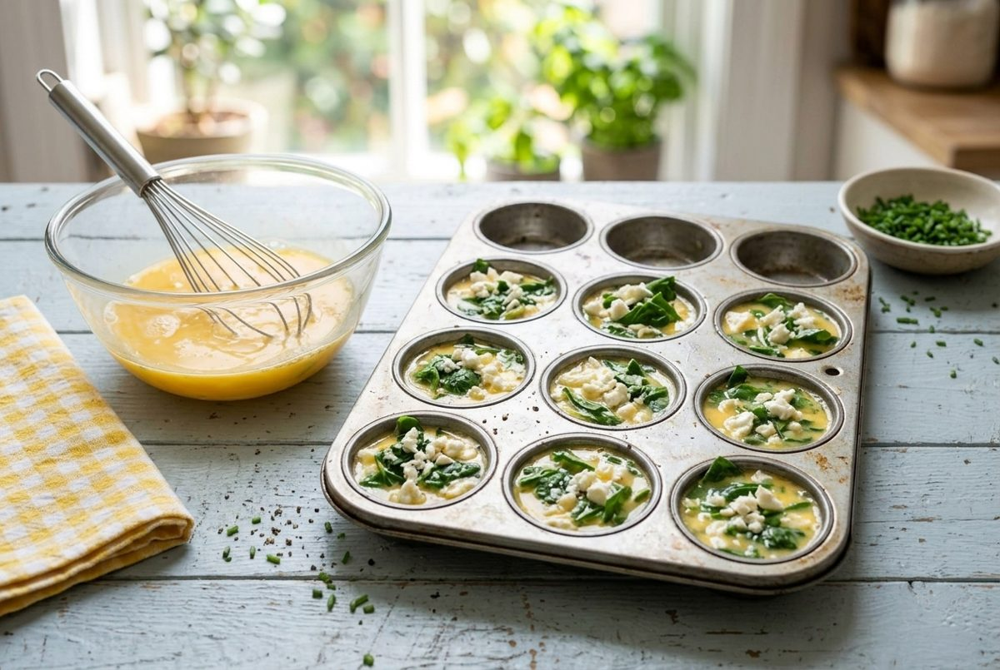
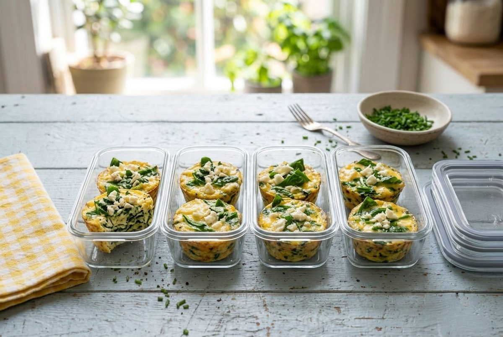

High-Protein Spinach and Feta Egg Muffins (Grab-and-Go Breakfast Meal Prep)
Per serving (3 muffins). Nutrition is an estimate and varies with brands.

Egg muffins are the easiest grab-and-go breakfast for busy mornings. Spinach, feta and red pepper go into a muffin tin, eggs go over the top, and 20 minutes later you have a dozen protein-packed bites.
Three muffins give you 21g protein and 260 calories, with almost no carbs. They are made for work mornings, school runs and anyone who needs breakfast sorted for the week.
They also freeze well, so you can bake a double batch and keep some for later.
Ingredients

- 10 large eggs
- 1/4 cup (60ml) milk
- 5 oz (140g) baby spinach, roughly chopped
- 1/2 cup (75g) crumbled feta, divided
- 1/2 cup (75g) diced red bell pepper (capsicum)
- 1/2 cup (75g) diced onion
- 2 tbsp (6g) chopped chives
- 1/2 tsp salt
- 1/4 tsp black pepper
Instructions
- Heat the oven to 350°F (175°C). Grease a 12-cup muffin tin, or use silicone liners.
- Whisk the eggs, milk, salt and pepper in a large bowl until smooth.
- Divide the spinach, red pepper, onion and half the feta across the 12 cups.
- Pour the egg mixture evenly over the cups, about 1/4 cup (60ml) each. Sprinkle the remaining feta on top.

- Bake for 20 to 22 minutes, until puffed, golden and set in the center. Let them cool for 5 minutes, then run a knife around each muffin to lift it out.
- Sprinkle with the chives. Divide into 4 containers of 3 muffins each.
Meal Prep, Storage and Reheating

- Fridge: keeps for 4 days in airtight containers.
- Freezer: freezes for up to 3 months. Cool the muffins fully first, then freeze on a tray before bagging.
- Reheat: microwave for 30 to 45 seconds from the fridge, or 60 to 90 seconds from frozen.
- Tip: a paper towel in the container soaks up extra moisture.
Quick Questions
Why did my egg muffins deflate? This is normal. Egg muffins puff in the oven and settle as they cool.
Can I use egg whites? Yes. Swap 6 of the whole eggs for 12 egg whites to cut the calories. The muffins will be a little less rich.
Can I add meat? Yes. Add 1/2 cup (75g) of cooked, crumbled turkey sausage or diced ham to the cups before the eggs.